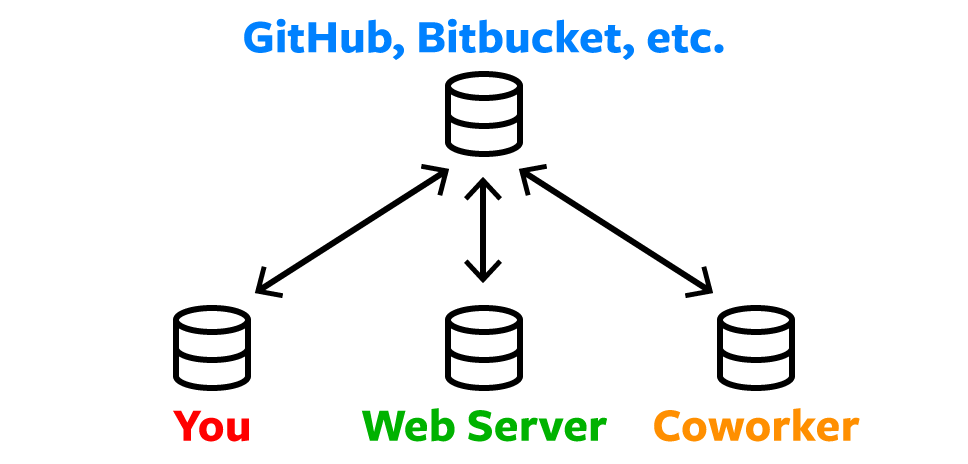

Let's learn about Git
What is Git?
Git is a version-control system for tracking changes in computer files
and coordinating work on those files among multiple people. Git is an
essential tool in software development workflows helps developers
manage and collaborate on software projects efficiently by tracking
changes, enabling branching and merging, and providing a detailed
history of project development. It was created by Linus Torvalds in
2005 and has since become one of the most widely used tools in the
software development industry. Git is designed to help developers
collaborate on projects, manage different versions of their code, and
track the history of changes made to a codebase.
Read more...
 Diagram of a simple Git workflow
Diagram of a simple Git workflow
Why do developers need Git?
Git is an essential tool for developers because it provides version
control, facilitates collaboration, helps manage code history,
enables safe experimentation, and supports various development
workflows. It has become a fundamental part of modern software
development practices, helping teams and individuals work more
efficiently and effectively. With remote repositories, files are
stored safely such that work-in-progress are not lost due to loss of
or damage to local machines. Developers can collaborate easily with
cloning, branching & merging and pull requests. These and others are
why developers need to master and use Git.
Read more ...

Git workflow of remote repository and developers team
What is a branching in a Git?
Branching in Git is a powerful feature that allows developers to create separate lines of
development within a Git repository. Each branch represents a distinct path of code changes.
Branching enables developers to work on different features, bug fixes,
or experiments simultaneously, without interfering with the main codebase.
Read more ...
 Git Branches and its workflow
Git Branches and its workflow